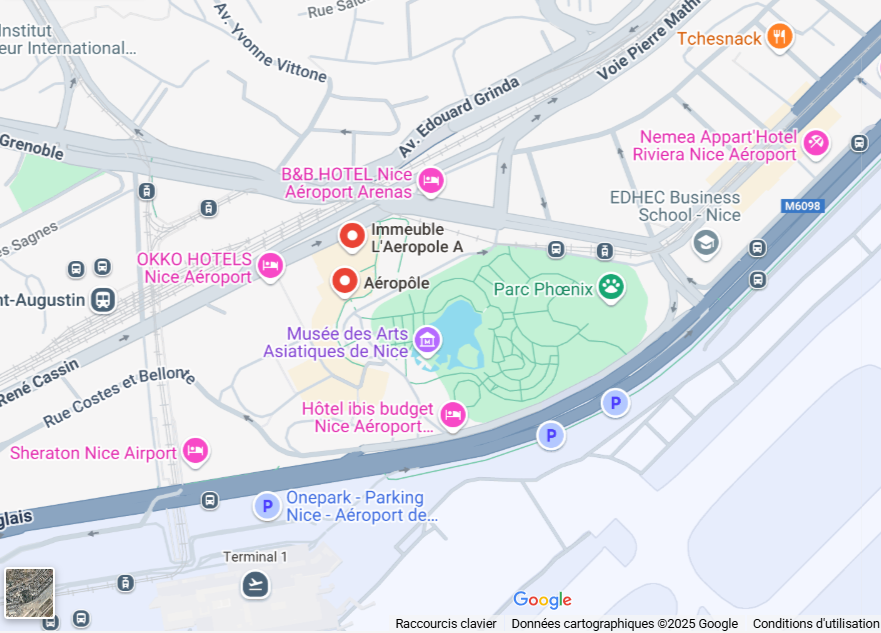
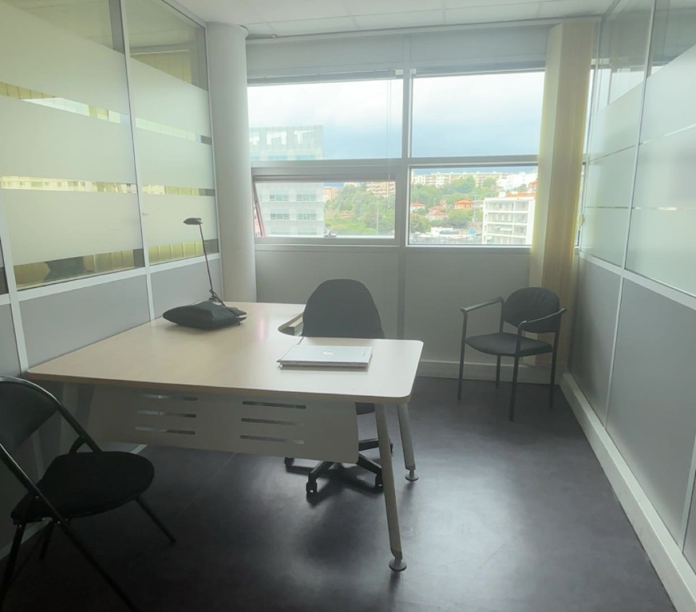
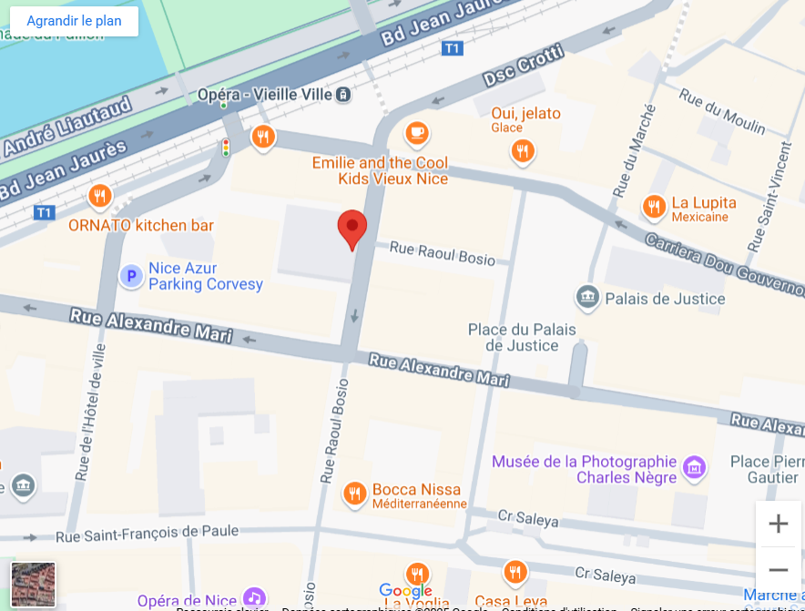
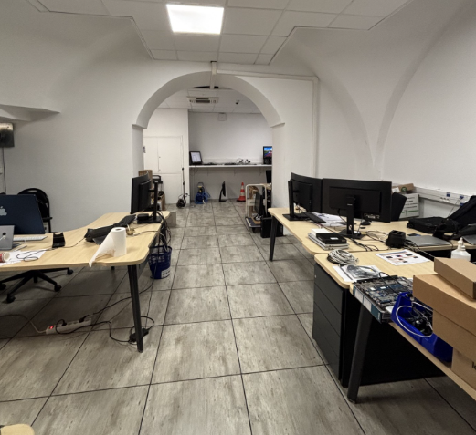

Objectifs
Participer à la mise à jour d’un dashboard et contribuer à la base de connaissance BookStack.
Chargement du portfolio
Préparation de l’expérience…
Jeudy Vincent
Portfolio • BTS SIO
BTS SIO • SLAM
Deux stages à la Métropole Nice Côte d’Azur : développement, support et outils internes.
La Métropole Nice Côte d’Azur coordonne des services publics essentiels (transports, environnement, numérique) et modernise les infrastructures de la région.




Participer à la mise à jour d’un dashboard et contribuer à la base de connaissance BookStack.
HTML, CSS, Python, PowerShell, JavaScript, AutoIt.
Intégrer BookStack à un assistant IA pour automatiser la mise à jour des contenus.
PHP, API, scripts, dépendances (GhostScript), bases IA.